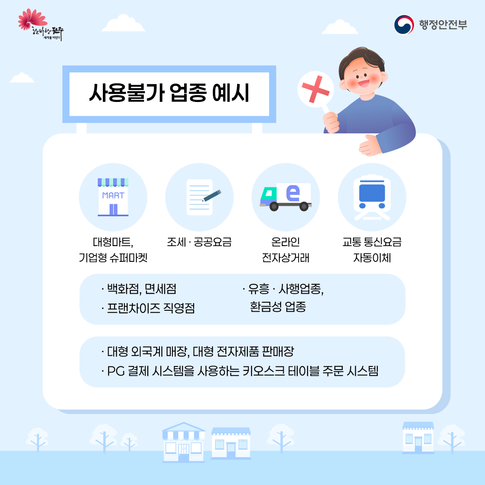
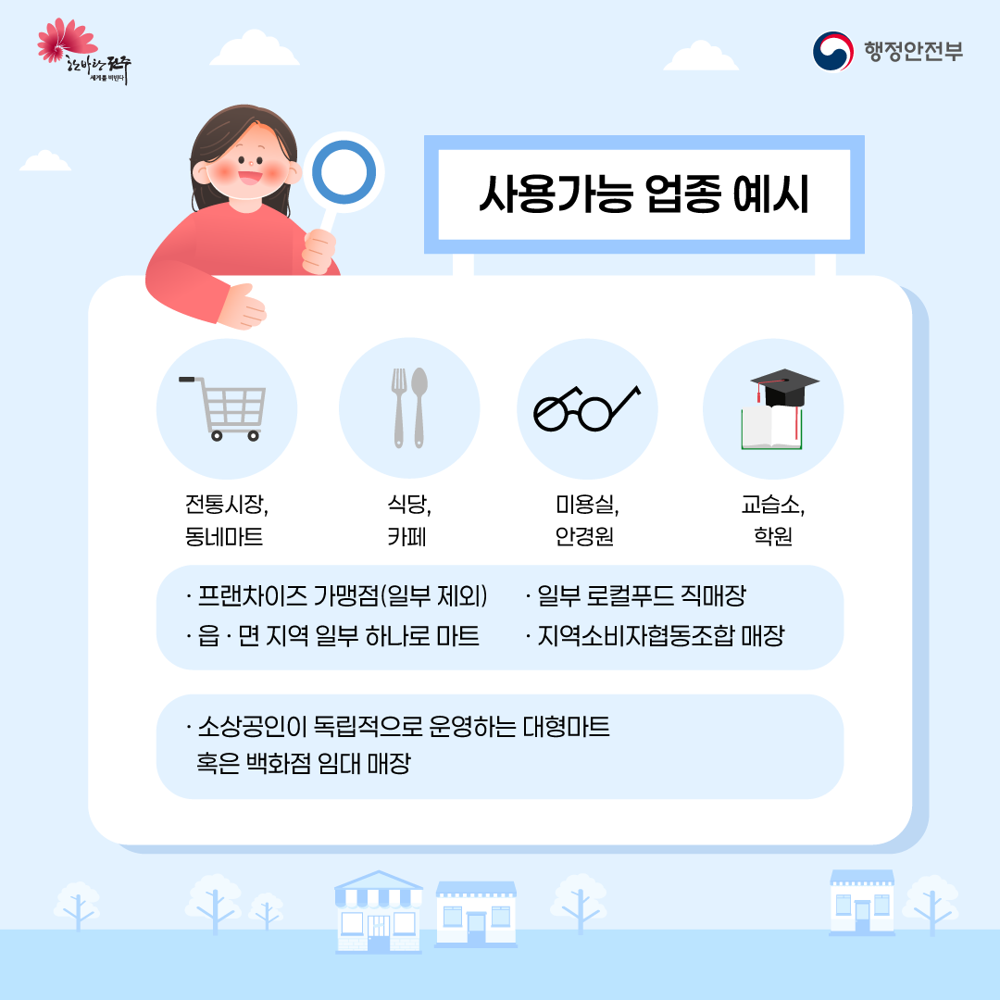
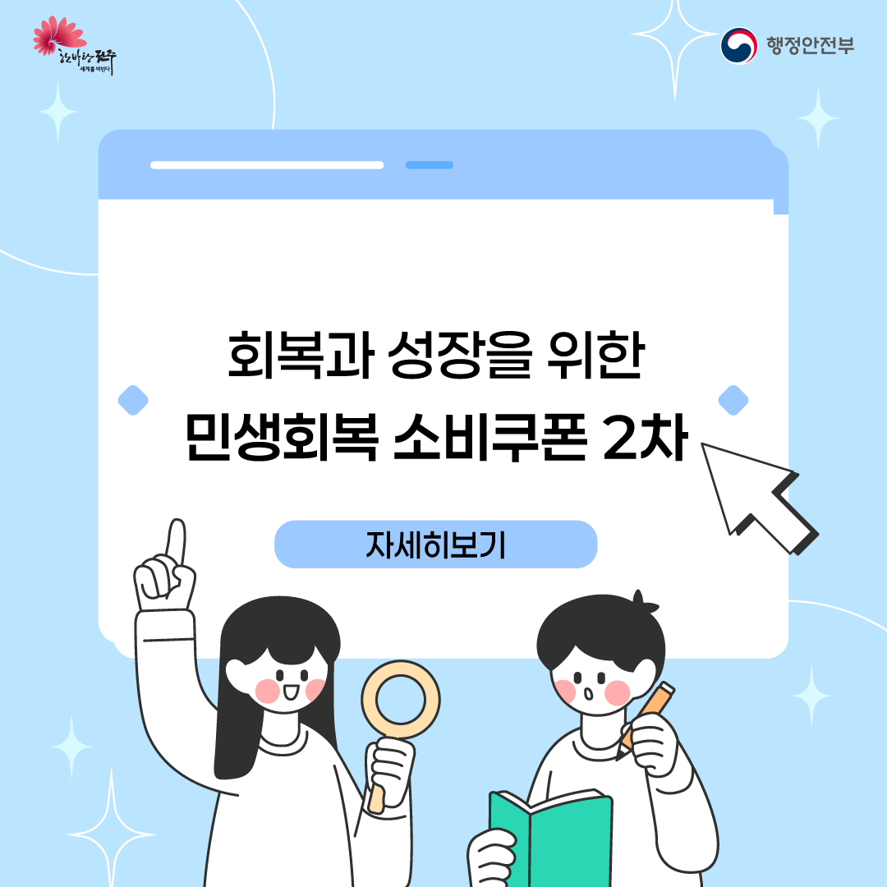
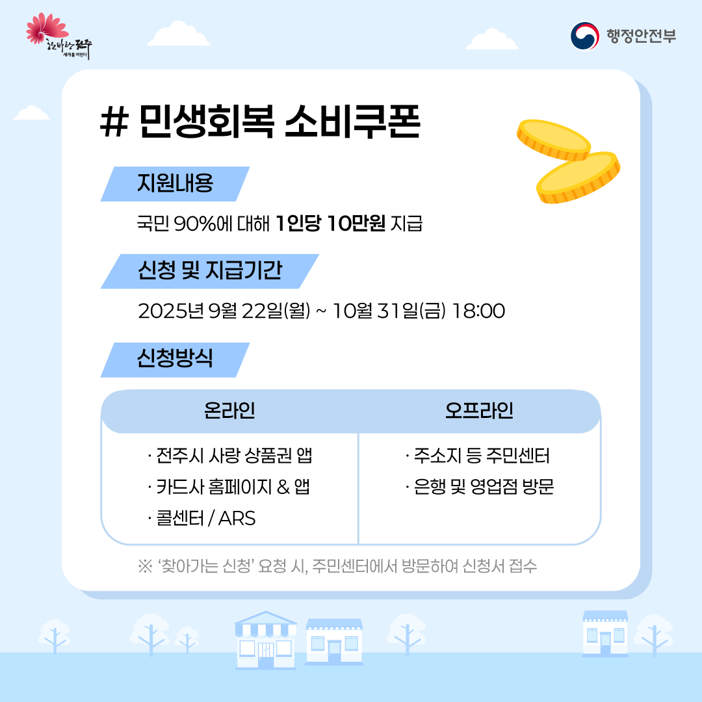
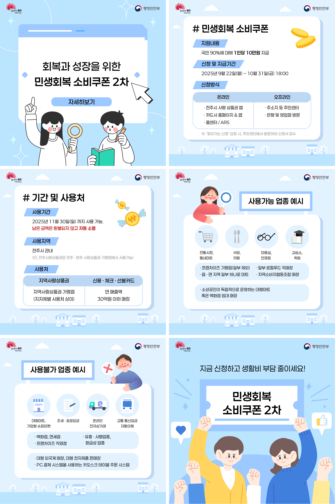

01MAIN TITLE
민생회복 소비쿠폰
GRAPHIC PROJECT · INFORMATION DESIGN
6 CARDS · 2026
복잡한 정책 정보를 쉽고 빠르게 전달할 수 있도록
정보를 구조화하고 시각적으로 정리한 카드뉴스입니다.



INFORMATION SYSTEM
정보의 중요도에 따라 굵기와 크기를 나누고, 블루 계열의 구분색을 반복해 한 장 안에서도 읽는 순서가 자연스럽게 이어지도록 구성했습니다.

TYPEFACE
4 Regular · 5 Medium · 6 SemiBold
민생회복 소비쿠폰
지원내용
국민의 90%에 대해 1인당 10만원 지급
온라인 · 전주시 사랑 상품권 앱
※ ‘찾아가는 신청’ 요청 시, 주민센터에서 방문하여 신청서 접수
COLOR ROLE
Section label · Accent
Table header · Information group
Note · Secondary information
READING ORDER
제목에서 핵심 항목으로, 다시 상세 정보와 주석으로 시선이 내려가도록 정보 위계를 단계적으로 나눴습니다.
RESULT VIEWER
썸네일 또는 좌우 버튼을 눌러 여섯 장의 카드뉴스를 한 장씩 확인할 수 있습니다.
FINAL OVERVIEW
여섯 장을 한눈에 보며 전체 흐름과 반복되는 시각 요소의 통일감을 확인할 수 있습니다.
